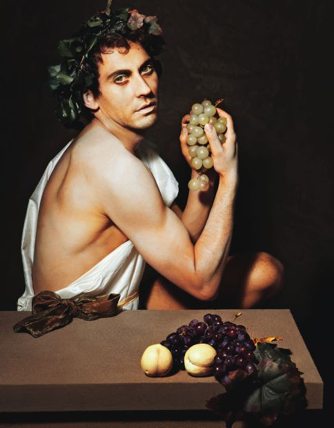

Thần Rượu nho-Dionysos (thần thoại La Mã: Bacchus) là con của thần Zeus và một người phụ nữ trần tục tên là Sémélé. Là vị thần đã dạy cho con dân đất Hy Lạp nghề trồng nho và nghề ép rượu nho, một nghề đem lại cho con người bao nguồn lợi và niềm vui, nên Dionysos được nhân dân Hy Lạp vô cùng biết ơn và sùng kính. Nếu chúng ta coi nữ thần Athéna, người đã ban cho con dân Hy Lạp cây olive và dạy họ ép dầu olive, thần Thợ rèn-Héphaïstos, người đã truyền dạy nghề thủ công, và nữ thần Déméter, người đã truyền dạy nghề nông, là những vị “thượng đẳng phúc thần” thì đương nhiên chúng ta phải xếp Dionysos vào danh sách cao quý đó. Thế nhưng, than ôi! Cuộc đời của vị “thượng đẳng phúc thần” này lại hẩm hiu, gian truân, long đong, vất vả hết chỗ nói.

Thần Rượu Nho Dionysos
Héphaïstos chỉ bị thọt chân, Déméter chỉ đau khổ một thời gian rồi lại được gặp Perséphone, còn Dionysos thì khổ cực từ tấm bé, khổ từ trong bụng mẹ khổ đi. Chuyện về cuộc đời của Dionysos cho đến nay kể năm, kể tháng không biết tính được là bao lâu. Ấy thế mà dường như đối với người dân Hy Lạp, chuyện về cuộc đời của vị thần ấy như vừa mới xảy ra đâu đó năm ngoái, năm kia. Chưa ai quên được, chưa ai là người khi vui nâng cốc rượu nho chúc tụng sức khỏe cùng bạn bè, khi vui bước chân vào nhà hát xem diễn kịch lại quên mất công lao to lớn của vị thần Dionysos.
Thần Zeus có một mối tình “vụng trộm” với một người phụ nữ trần tục tên là Sémélé. Để tránh sự theo dõi của nữ thần Héra, vợ mình, Zeus thường biến hình, biến dạng, thành một chàng trai, một người trần thế, xuống ái ân, tình tự với Sémélé. Nhưng đó chỉ và sự che giấu tung tích đối với Héra. Còn đối với Sémélé thì Zeus chẳng những không hề giấu kín tung tích mà con khoe khoang về địa vị “Zeus” của mình khá nhiều. Có một lần trong lúc đắm nguyệt, say hoa, Zeus đã hứa với Sémélé sẽ vì nàng, vì tình yêu của nàng mà săn sàng làm bất cứ điều gì mà nàng mong muốn, sẵn sàng chiều theo ý muốn của nàng để đền đáp lại mối tình say đắm của nàng. Zeus khoe khoang, tự hào với người yêu về địa vị và quyền lực của mình thì người yêu của Zeus cũng khoe khoang với bạn bè về địa vị và quyền lực, thậm chí rất lấy làm hãnh diện về Zeus, Zeus hứa với Sémélé như thế và viện dẫn đến dòng nước thiêng liêng cùng con sông âm phủ Styx để làm chứng cho lời hứa của mình. Tai họa bắt đầu từ chỗ đó.
Nữ thần Héra với con mắt soi mói lần này không nổi cơn thịnh nộ như những lần trước. Nàng biết hết mọi hành động ám muội của chồng. Nàng lại còn biết chồng mình đã chỉ non thề biển những gì với Sémélé. Vì thế Héra nghĩ ra một cách trừng trị Sémélé rất thâm độc. Nàng xúi giục bạn bè của Sémélé gièm pha người yêu của Sémélé, rằng đó chẳng phải là một vị thần đầy quyền thế như Sémélé vẫn thường khoe, mà thực ra chỉ là một anh chăn chiên tầm thường. Héra lại còn biến dạng, biến hình thành người nhũ mẫu của Sémélé để xúi giục Sémélé phải đòi Zeus biểu lộ quyền lực của mình, chứng minh được rằng mình đích thị là thần Zeus.
Nghe theo những lời xúi giục ấy, Sémélé, một bữa kia khi gặp Zeus, năn nỉ đòi Zeus, hãy hiện ra với tất cả phong thái uy nghi, vô địch của mình. Zeus lắc đầu quầy quậy, một mực chối từ, bảo cho Sémélé biết đó là một ước muốn điên rồ và vô cùng nguy hiểm. Zeus khuyên Sémélé hãy từ bỏ ngay đòi hỏi đó và nhắc lại cho nàng biết, trừ đòi hỏi muốn Zeus biểu lộ uy quyền ra, còn thì bất cứ đòi hỏi gì Zeus cũng sẽ làm nàng thỏa mãn. Song nước mắt của phụ nữ vốn có một sức mạnh. Hơn nữa lại còn thề nguyền cam kết có sự chứng giám của nước sông Styx. Có thể nào bậc phụ vương của các thần và người trần thế lại vi phạm lời thề nguyền thiêng liêng? Và cuối cùng Zeus hiện ra với tất cả vẻ uy nghi đường bệ, oai phong lẫm liệt thật xứng đáng là vị thần tối cao của thế giới thần thánh và loài người. Zeus lạnh lùng và nghiêm nghị vung tay một cái lên cao rồi giáng xuống. Một tiếng nổ xé tai. Bầu trời chói lòa ánh sáng, mặt đất run lên giần giật như một con thú bị tử thương đang giãy chết. Sémélé không kịp kêu lên một tiếng. Nàng ngã vật xuống đất lìa đời vì không chịu đựng nổi tiếng sét kinh thiên động địa với ánh sáng chói lòa của chồng mình. Đó là lần đầu tiên và cũng là lần cuối cùng trong cuộc đời của Sémélé được thấy rõ quyền uy và sức mạnh của Zeus, được tin chắc, tin như đinh đóng cột rằng người yêu của mình là vị thần tối cao. Sấm sét của Zeus làm rung chuyển cả cung điện của vua Cadmos, người đã xây dựng lên thành Thèbes bảy cổng. Lửa bốc cháy tràn lan làm sụp đổ nhiều lâu đài, dinh thự. Sémélé chết vào lúc đang có mang Dionysos. Thần Zeus nhanh tay lấy được đứa con trong bụng mẹ ra trước khi lửa thiêu cháy thi thể Sémélé. Nhưng đứa bé chưa đủ ngày đủ tháng, Zeus phải mổ đùi mình ra đưa đứa bé vào rồi khâu lại, nuôi nó trong đùi ba tháng nữa rồi mới cho nó ra đời. Hơn nữa làm như vậy lại che được con mắt tinh quái của Héra. Và đến ngày Dionysos ra đời, lại một sự sinh nở thần kỳ nữa! Lần trước Zeus đẻ Athéna ra từ đầu, lần này Zeus đẻ Dionysos ra từ đùi. Đẻ xong, Zeus giao cho thần Hermès đem đến thung lũng Nida gửi các tiên nữ Nymphe nuôi hộ. Chẳng phải chỉ ở thần thoại Hy Lạp mới có cái chuyện sinh nở huyền hoặc và kỳ diệu như thế này, một “ca” rất lôi thôi, phiền toái cho công việc hộ sinh! Thần thoại Ấn Độ cho chúng ta biết, thần Mẹ Đất đã sinh ra thần Indra từ... sườn. Còn thần thoại Phật giáo thì kể rằng hoàng hậu Maya sinh ra Đức Phật... cũng từ sườn!
Thật ra thì trước khi Dionysos đến tay các tiên nữ Nymphe ở thung lũng Nida, thần Hermès đã trao Dionysos cho nhà vua Athamas trị vì ở đô thành Orchomène xứ Béotie nuôi nấng hộ. Athamas là con rể của vua Cadmos, vợ Athamas là Ino, chị ruột của Sémélé. Có chuyện kể, khi Zeus thể hiện quyền lực của mình, giáng sấm sét, Sémélé ngã lăn ra chết và đó cũng là lúc nàng đẻ rơi ra Dionysos. Khi ấy, khói mù mịt, lửa cháy ngùn ngụt xung quanh. Trong tình cảnh nguy hiểm như thế thì may gặp một phép lạ xuất hiện, từ dưới lòng đất bỗng mọc lên một giống cây leo. Chỉ trong nháy mắt cây này đã mọc thành một bụi, vươn rộng tỏa dài um tùm trùm phủ lấy đứa bé mà Sémélé vừa đẻ rơi, ngăn không cho ngọn lửa xâm phạm đến. Nhờ nó Zeus mới kịp thời đến bế lấy con và đưa vào trong đùi nuôi tiếp cho đủ chín tháng mười ngày.
Athamas và Ino nuôi con của Zeus. Việc này không thoát khỏi con mắt của Héra. Vị nữ thần ghen nổi tiếng nổi tăm này lại giáng tai họa trừng phạt. Héra làm cho Athamas mất trí hóa điên. Trong một cơn điên ghê gớm, Athamas giết chết tươi đứa con trai yêu dấu của mình là Léarchos. Nhà vua lại còn lao vào toan giết vợ và giết mất đứa con trai nữa. Ino dắt con, chú bé Mélicerte, chạy trốn. Nhưng Athamas gào thét, lao đuổi theo hai mẹ con, Ino chạy được một lúc thì cùng đường vì phía trước là vách núi cắt thẳng xuống biển. Athamas thì chẳng còn mấy bước nữa là tóm bắt được hai mẹ con. Trong lúc cùng quẫn, Ino bế con nhảy xuống biển. Các tiên nữ Néréides đón được hai mẹ con. Ino được biến thành một nữ thần Biển mang tên là Leucothée, còn Mélicerte được biến thành một nam thần Biển mang tên là Palémon.
Đối với cha mẹ nuôi Dionysos là như thế, còn đối với Dionysos tất nhiên nữ thần Héra phải tìm mọi cách để thanh trừ. Thần Zeus phải biến đứa con yêu quý của mình thành một con dê rồi giao cho Hermès đưa đi giấu ở chỗ này, chỗ khác. Sau cùng Zeus giao chú bé Dionysos cho các tiên nữ Nymphe ở thung lũng Nida nuôi dưỡng giúp. Đây là những tiên nữ đẹp nhất trong thế giới các tiên nữ Nymphe.
Người xưa kể sắc đẹp của các tiên nữ Nymphe ở thung lũng Nida là báu vật của thế giới thần thánh. Vì thế chưa từng một người trần thế nào có diễm phúc được chiêm ngưỡng sắc đẹp đó. Tên các Nymphe này là những nàng Hyades. Vì công lao nuôi dưỡng chú bé Dionysos, con của thần Zeus vĩ đại, nên sau này các nàng tiên được thần Zeus biến thành một chòm sao trên trời. Nhưng có nhiều người bác bỏ chuyện này, họ kể rằng các nàng Hyades có bảy chị em. Em trai ruột của các nàng là Hyas không may trong một cuộc đi săn ở xứ Libye bị sư tử vồ chết. Thương nhớ người em ruột, các nàng Hyades khóc mãi khôn nguôi, khóc hết ngày này qua ngày khác và cầu khấn thần Zeus. Để an ủi nỗi đau thương của các nàng và cũng để chấm dứt những dòng nước mắt triền miên, thần Zeus đã biến bảy chị em thành một chòm sao ở trên trời nằm trong dải Taureau. Nhưng các Hyades vẫn không nguôi thương nhớ người em ruột bất hạnh của mình. Các nàng vẫn khóc. Người Hy Lạp xưa kể rằng mỗi khi thấy các Hyades xuất hiện ở chân trời vào lúc mặt trời mọc hay mặt trời lặn là sắp có mưa. Hyades tiếng Hy Lạp có nghĩa là “hay mưa” (pluvieuses).
Thấm thoắt chẳng rõ bao nhiêu năm, Dionysos trưởng thành, không rõ có bị nữ thần Héra trả thù không, chàng nổi cơn điên, đi lang thang khắp cùng trời cuối đất. Đi tới đâu chàng cũng truyền dạy cho nhân dân nghề trồng nho và nghề ép rượu. Từ Ai Cập qua Syrie, Phrygie, có người nói chàng còn viễn du sang cả Ấn Độ nữa rồi mới trở về Hy Lạp, đâu đâu thần Rượu nho-Dionysos và đoàn tùy tùng cũng được tôn trọng kính yêu. Song không phải cuộc đời của vị thần này không gặp những bước gian truân, trắc trở. Tặng vật của thần ban cho loài người, rượu nho, có lúc bị người đời hiểu lầm đó là thứ nước bùa mê, ma quái. Uống vào làm đầu óc choáng váng, mê mê tỉnh tỉnh, còn trong người thì máu chảy giần giật, bốc nóng bừng bừng. Vì thế đã xảy ra không ít những sự hiểu lầm đáng tiếc.